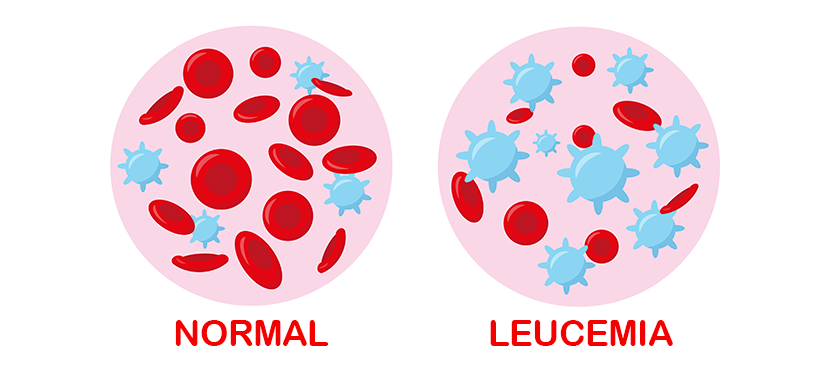

Leucemia
Descripción
La leucemia es un tipo de cáncer de los tejidos que forman la sangre en el organismo, incluyendo la médula ósea y el sistema linfático. Esta enfermedad generalmente involucra a los glóbulos blancos, los cuales son combatientes de infecciones, pero en las personas con leucemia, la médula ósea produce glóbulos blancos anormales que no funcionan correctamente.

Tipos principales de Leucemia
La leucemia se clasifica principalmente según la velocidad de progresión (aguda o crónica) y el tipo de glóbulo blanco al que afecta (linfocítica o mielógena):
| Tipo de Leucemia | Células afectadas | Velocidad de progresión |
|---|---|---|
| Leucemia Linfocítica Aguda (LLA) | Linfocitos (tejido linfático) | Rápida (Aguda) |
| Leucemia Mielógena Aguda (LMA) | Células mieloides | Rápida (Aguda) |
| Leucemia Linfocítica Crónica (LLC) | Linfocitos (tejido linfático) | Lenta (Crónica) |
| Leucemia Mielógena Crónica (LMC) | Células mieloides | Lenta (Crónica) |
Causas
Las causas exactas de la leucemia no se comprenden por completo, pero se cree que es una combinación de factores genéticos y ambientales. Algunos factores de riesgo incluyen:
- Tratamientos oncológicos previos (quimioterapia y radioterapia).
- Trastornos genéticos, como el síndrome de Down.
- Exposición prolongada a ciertas sustancias químicas, como el benceno.
- Antecedentes familiares de leucemia.
Síntomas
Los síntomas de la leucemia varían según el tipo, pero los signos más comunes incluyen:
- Fiebre o escalofríos persistentes.
- Fatiga crónica y debilidad general.
- Infecciones frecuentes o graves.
- Pérdida de peso sin intentarlo.
- Sangrado y formación de hematomas con facilidad (como hemorragias nasales recurrentes).
Pruebas y exámenes
Para diagnosticar la leucemia, los médicos suelen realizar:
- Análisis de sangre: Para observar niveles anormales de glóbulos blancos, glóbulos rojos o plaquetas.
- Examen físico: Para detectar ganglios linfáticos inflamados o un agrandamiento del bazo y el hígado.
- Examen de médula ósea: Consiste en extraer una muestra de la médula ósea del hueso de la cadera para buscar células leucémicas.
Tratamiento
El tratamiento depende del tipo de leucemia, la edad del paciente y su estado de salud general. Los tratamientos más frecuentes incluyen la quimioterapia, la terapia dirigida, la radioterapia y, en muchos casos, un trasplante de médula ósea (trasplante de células madre).
Expectativas (Pronóstico)
El pronóstico varía enormemente dependiendo del tipo específico de leucemia y de la rapidez con la que se inicie el tratamiento. Gracias a los avances médicos, las tasas de remisión y supervivencia han mejorado significativamente en las últimas décadas, especialmente en las leucemias infantiles.